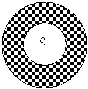

Q.
In the figure below, the radius of the
larger circle is twice that of the smaller circle. If the circles are concen tric,
what is the ratio of the shaded region’s area to the area of the
smaller circle?

Solution:Suppose the radius of the larger
circle is 2 and the radius of the smaller circle is 1. Then the area of the
larger circle is
πr2 = π(2)2 = 4π,
and the area of the smaller circle is
πr2 = π(1)2 = π.
Hence, the area of the shaded region is
4π – π = 3π. Now,
| area of shaded region |
| area of smaller circle |
=
=
.
The answer is
C.